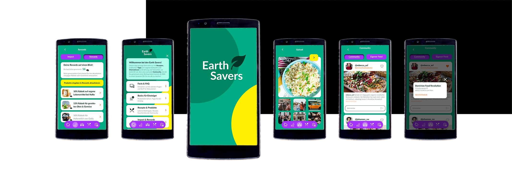

Case Study: Website – Konzeption, Design, Prototyping

In dieser Case Study wurde eine Website für ein Urlaubsresort entwickelt, das sich an Familien mit gut verdienenden Eltern und Kindern bis 12 Jahren richtet. Der Fokus liegt auf der Erholung der Eltern, die dank vielfältiger Angebote und Kinderbetreuung völlig entspannen können.
Die Website zielt darauf ab, Erwachsenen Exklusivität zu vermitteln, während die kinderfreundlichen Angebote mit spielerischen Elementen präsentiert werden. Ein Hauptziel war die "Mobile First"-Umsetzung, um den Buchungsprozess und Kontaktmöglichkeiten schnell und intuitiv zu gestalten.
Case Study: Mobile App – Konzeption, Design, Prototyping
Die App „Earth Savers“ ist eine vegane Community-App, die Einsteigern den Einstieg erleichtert und erfahrene Veganer inspiriert. Sie bietet vegane Rezeptvorschläge auf Basis vorhandener Lebensmittel, zeigt die täglichen Auswirkungen der Gewohnheiten und ermöglicht den Austausch in der Community. In diesem Projekt habe ich Konzeption, Design und Prototyping übernommen.
Editorial Design

Im Bereich Editorial Design hatte ich einige Projekte, darunter die Planung und Betreuung verschiedener Fotoshootings wie beispielsweise für ein Stahlwerk in Rumänien sowie die anschließende Gestaltung der dazugehörigen Broschüren und Anzeigen.
Außerdem war ich verantwortlich für die Gestaltung von Flyern, Plakaten und Programmheften für das Lufthansa Orchester, Anzeigen und POS-Material für Samsung sowie für die Erstellung vonReisekatalogen für Thomas Cook.
Case Study: Software – Konzeption & Design

Für einen Automobilhersteller habe ich eine Fuhrparkverwaltungssoftware konzipiert und gestaltet, um das Ausleihen von Testfahrzeugen und die Dokumentation von Qualitätsmängeln effizient zu ermöglichen. Die Software bietet eine Übersicht über die Fahrzeugverfügbarkeit, ermöglicht Reservierungen und die Erfassung von Mängeln mit Foto-Upload nach Testfahrten. Eine Stakeholder-Analyse, User Flow und Personas bildeten die Grundlage für die Entwicklung.
Das Design ist klar und benutzerfreundlich, mit harmonierenden Farben und einer modernen Typografie, die sowohl auf Tablets als auch Desktops optimale Bedienbarkeit sicherstellt. Um die User Experience weiter zu verbessern, sind Experten-Reviews und Usability-Tests geplant.